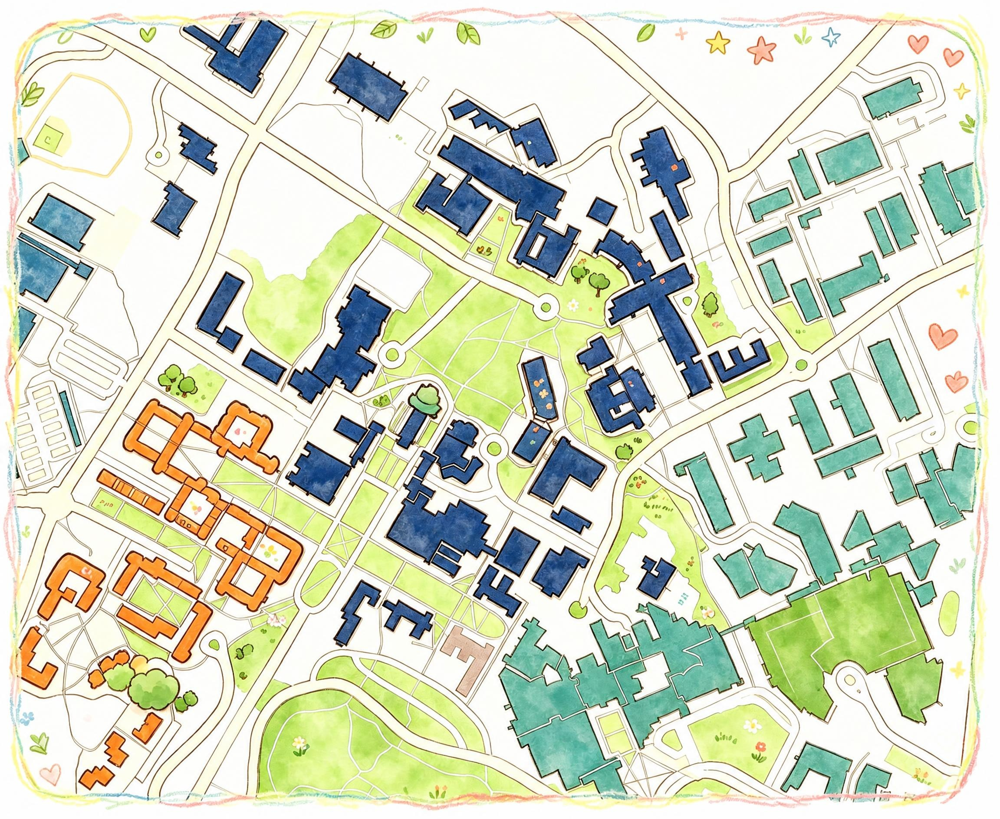
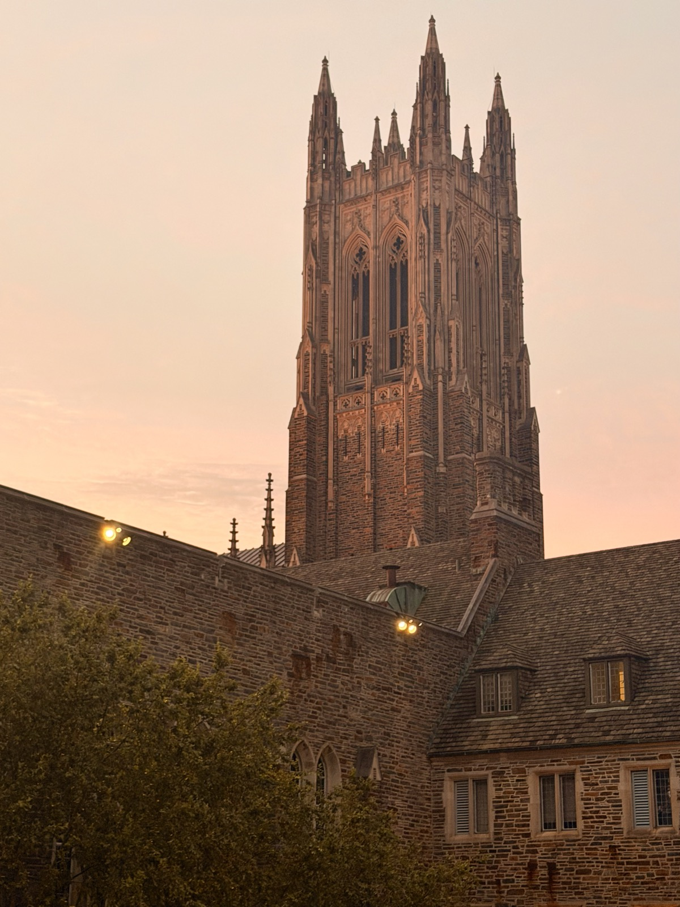
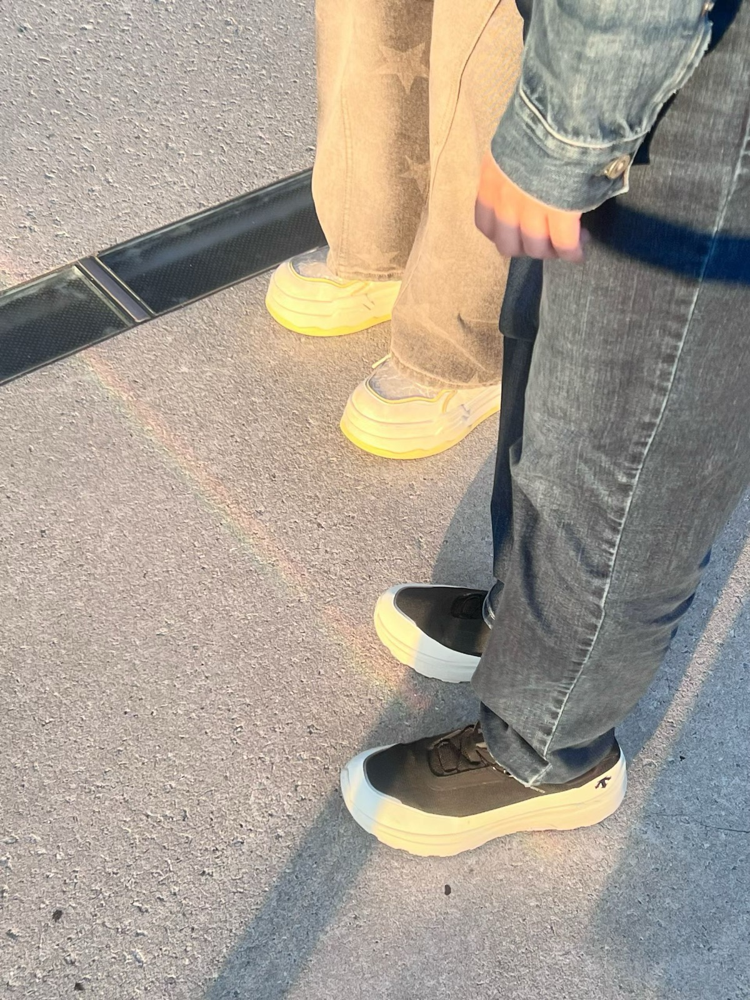
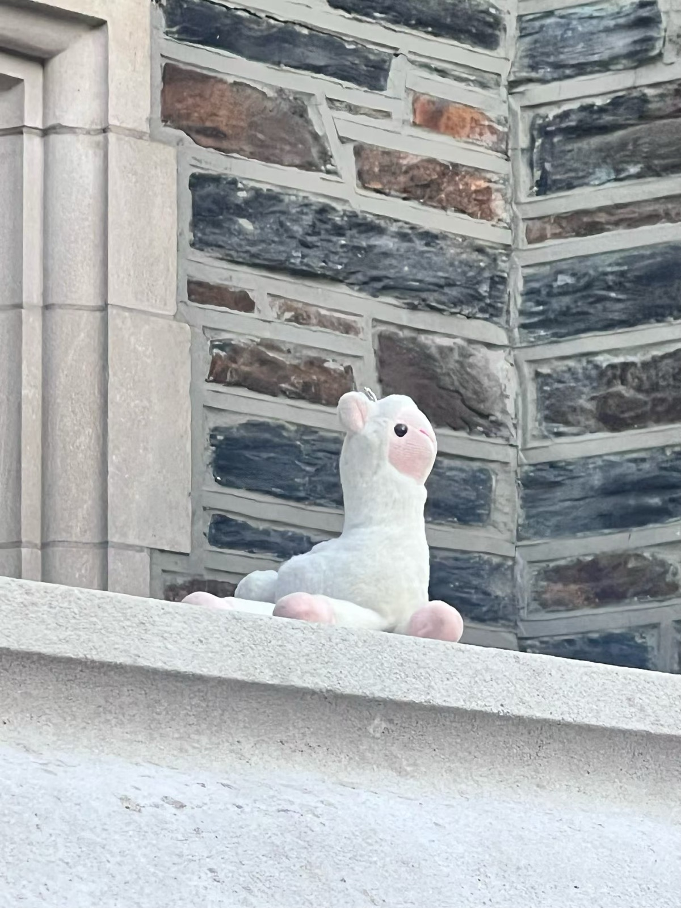
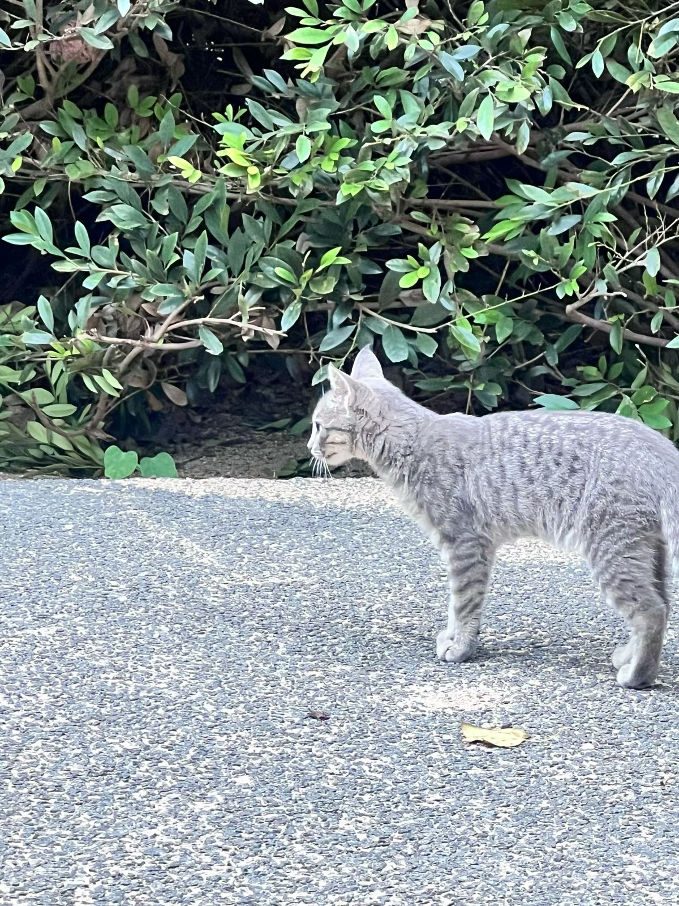
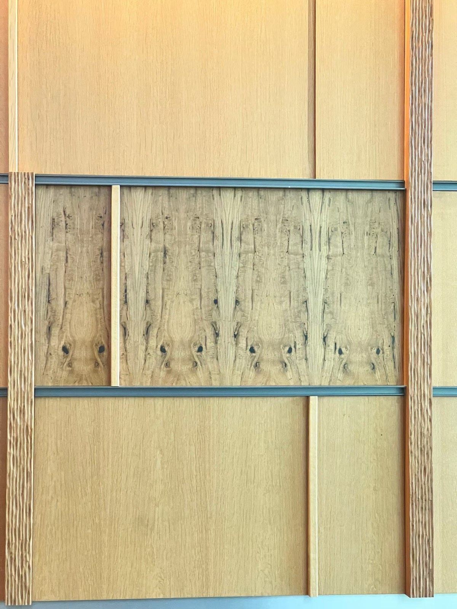
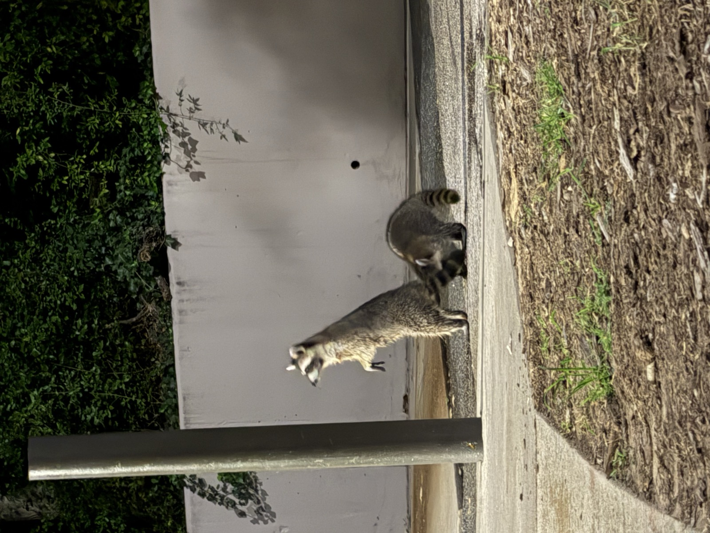

SMALL MOMENTS, AROUND DUKE
Notice the little things that make the everyday beautiful.


A MOMENT ALONG THE WAY · 01
A soft red glow settled over Duke Chapel as I walked home from class—an ordinary evening made unforgettable by a moment I almost missed.
Noticed by Ada

A MOMENT ALONG THE WAY · 02
In front of Brodhead Center, sunlight through the glass cast a rainbow band across the ground, and friends stopped together to watch amid the noise.
Noticed by Vanessa

A MOMENT ALONG THE WAY · 03
A small alpaca plush lay on the stair railing near Few Quad, gazing into the distance as if it had found its own quiet view.

A MOMENT ALONG THE WAY · 04
A tiny kitten, only a few months old, crossed the path behind Wannamaker with a soft, milky meow that made the whole moment feel gentle.

A MOMENT ALONG THE WAY · 05
The wooden decoration at the Wellness Center entrance looks, if you look closely, like a row of gentle capybara faces waiting to be noticed.

A MOMENT ALONG THE WAY · 06
On my way to the laundry room, I met three tiny raccoons on the path behind Edens 2C; they disappeared too fast to photograph well, but the surprise stayed with me.